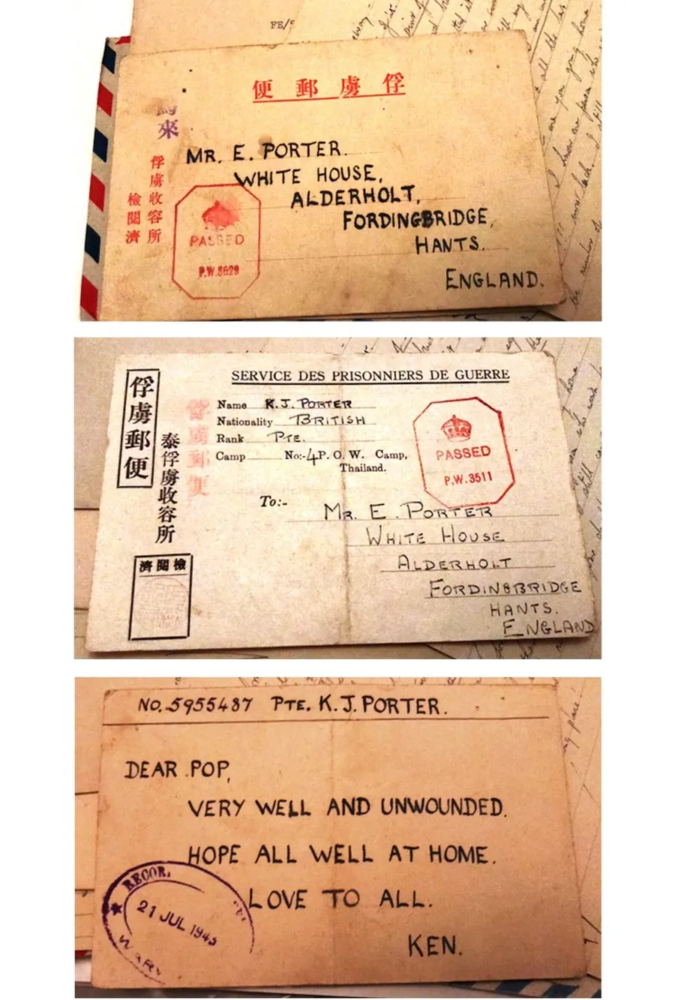
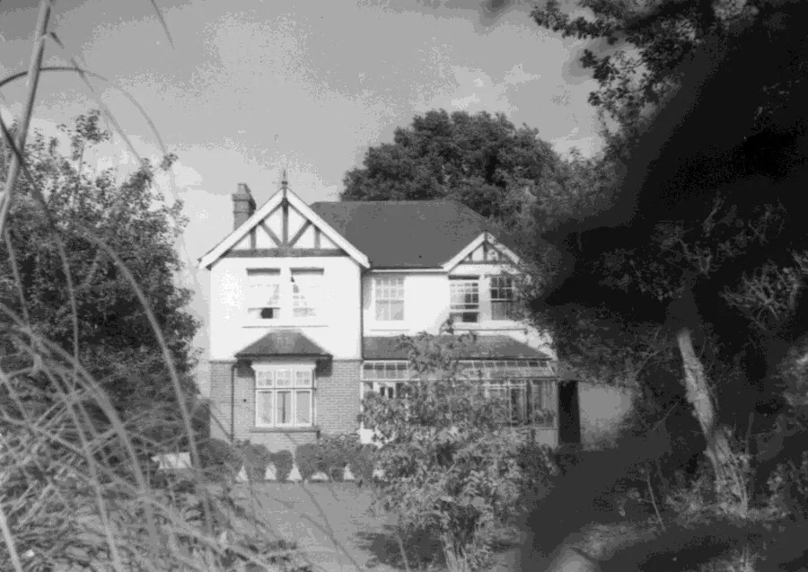
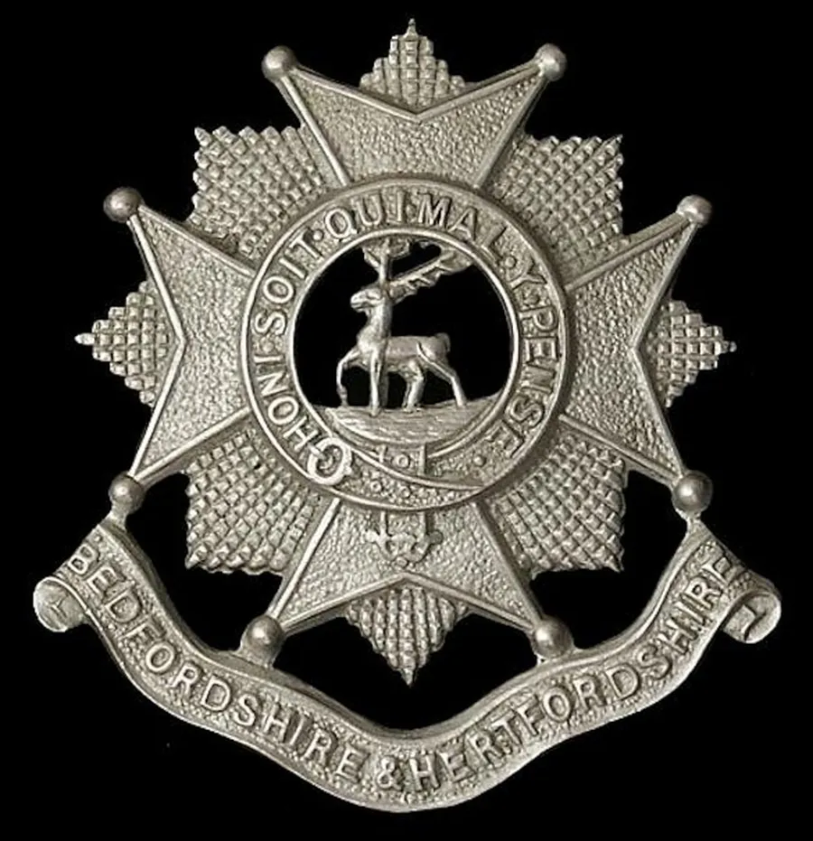
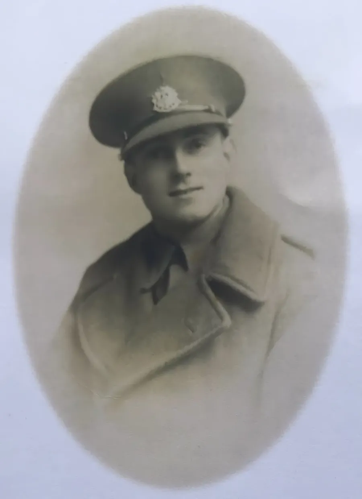
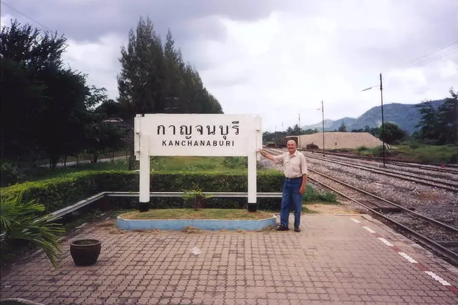
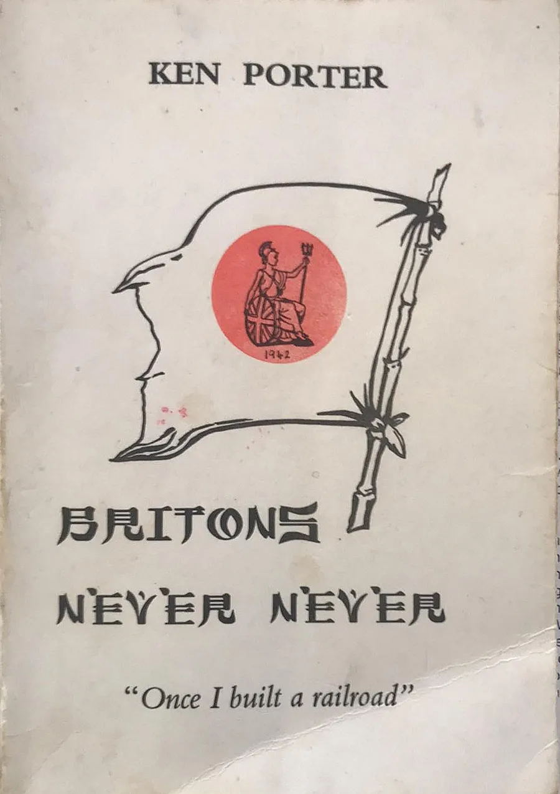
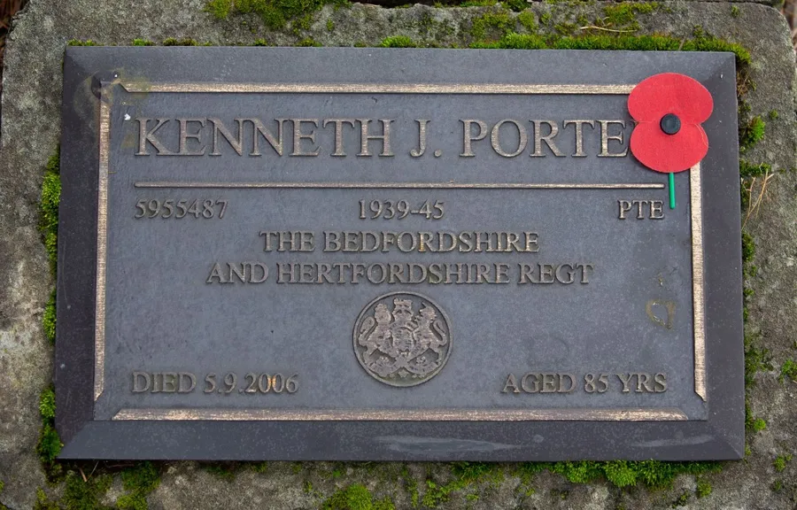

Kenneth John Porter
(1921–2006)
by Adrian King

In the month of remembrance I wrote about Kenneth John Porter. He was a village lad who went to war but you won’t find him on the war memorial as he was a survivor.
At the end of November 2020 Christine Emm passed to me some information that she had received. It consisted of prisoner cards sent home by Private Ken Porter of C Company Beds and Herts Regiment. One referred to the fighting in Singapore and the other when captive on the Thailand–Burma Railway. What was interesting was that they were addressed to Mr. E. Porter, White House, Alderholt.

I contacted Anita Gillan in Auckland who I found out later was Kenneth Porters daughter and then I helped her discover her roots in Alderholt and the UK. It kept me busy during lockdown.
Kenneth was the son of Ernest and Winifred Porter. He was born the youngest of three children in Christchurch District on 6th January 1921 when the family were living in Heatherlands, Ferndown. They were living in 18 Avenue Road, Wimborne where in 1925 his mother Winifred died. He was only 3 years old.
Thomas Hardy had lived in the house next door during his two-year stay in Wimborne and it was where he wrote Two in a Tower.
By 1930 Ernest was living at White House, Fir Tree Hill, Camel Green.

Kenneth was
- Baptised in All Saints Hampreston Parish Church on 20th March 1921
- Confirmed at Wimborne St. Giles Parish Church on 27th March 1938
- Took his first communion at St. James Parish Church, Alderholt on Easter Day, 17th April 1938 where the Rev. Boulton was the vicar.
Following education in the village school he attended Queen Elizabeth Grammar School in Wimborne in 1936 and received a School Certificate A in 1938.
Ann Hickman remembers that he and her brother Clifford Butler were friends and travelled from Daggons Road to Wimborne on the train. Clifford gave him the nickname “Potter”. Anita Gillan said that her brother’s friends also used the same nickname.
He worked in a bank for a short time when he left school.

On the outbreak of war in 1939 Kenneth attempted while still a teenager to join the Army. He eventually enlisted on 4th June 1940 having added another year to his age and served in the Bedfordshire and Hertfordshire Regiment, 5th Battalion. His service number was 5955487.
After an initial Infantry and Snipers course he served in the Far East (Air) Campaign embarking on the Reina Del Pacifico.
Kenneth became a POW on the capitulation of Singapore on 14th February 1942, whilst holding position near the McRitchie Reservoir. He was held in Changi and River Valley Singapore from February to October 1942. Then held in Tha Sao, Tha Muang and Tha Makhan in Thailand.
In Thailand he was put on the construction of the Burma Railway and maintenance of the bridge over the Khwae Yai. Then they marched to Lampang in Northwest Thailand walking 609 km.

He suffered jungle ulcers, dysentery, malaria and malnutrition during his imprisonment. Kenneth was awarded the 1939–1945 Star, the Pacific Star and the War Medal 1939-1945.
Kenneth was liberated by the British on 21st August 1945 and was demobbed 1st February 1946.
After the war he could not settle and enlisted in the Royal Air Force on the 30th December 1946. He did a tour of duty in the Middle East attaining the position of Sergeant. He served in the RAF Police and was invalided out on 30th April 1953. Service number 4017919.
Kenneth then worked for a few months in 1953 for a Lebanese import and export company in Liberia, West Africa. His passport for that year has many stamps from exotic locations around Africa.

He emigrated to New Zealand in 1957 fulfilling a pledge made with a comrade in a prison camp that if they survived they would emigrate. He sailed with the New Zealand Line, leaving Gravesend on 7th June 1957 and passing through the Panama Canal arrived at Wellington on 12th July.
Kenneth became a dairy farmer in the Waikato area going into business with his brother-in-law Ian Spooner. Later he was an Auto Spares Manager in Auckland.
He married Lalita in January 1972 and they had two children, Anita, and Antony.

In 1993 in Auckland he wrote and self-published a book about his time as a prisoner of war titled Britons Never Never subtitled Once I Built a Railroad imprinted by Queenstown Publications. Anita Gillan published a second edition in July 2021 and sent me a copy.
In 1990 he returned to Thailand with Antony and a couple of other lads to see the infamous death railway at the border of Thailand and Burma (Myanmar).
Kenneth died 6th September 2006 and is buried in Papatoetoe Cemetery, 357 Puhinui Road, Auckland.

His daughter Anita said in April 2015
“My father was an amazing man. Loving, kind, gentle and extremely patient. As children my brother and I listened to him tell us of the hardship and torment he faced during the war…
He is sadly missed by his wife, son and daughter.”
His father Ernest Porter died in 1951 and is buried in Alderholt St. James Churchyard.